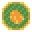
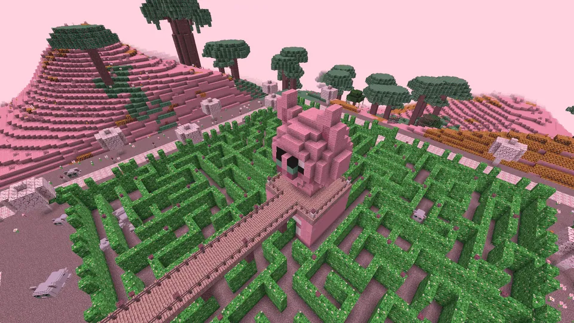
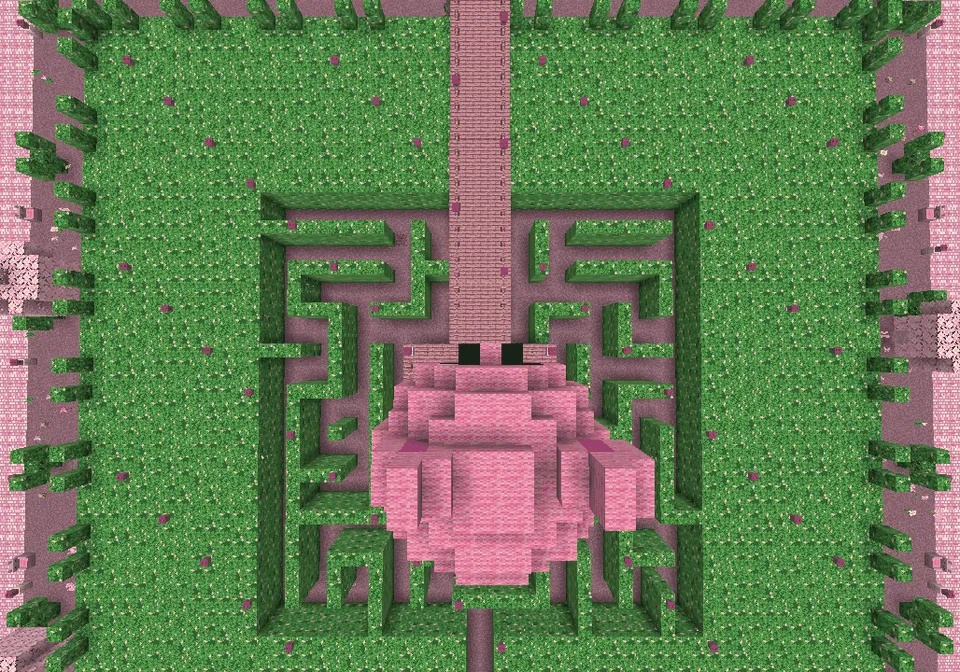

Een reusachtig heggendoolhof met een uitkijkguh in het midden (Guhvelden)
GuhdoolhofGuhveldenGuhvelden
A hedge maze with a guh-shaped lookout tower: a new maze every time.Een heggendoolhof met een uitkijktoren in guhvorm: elke keer een nieuw doolhof.
The GuhdoolhofHet Guhdoolhof
In the Guhvelden: a big square hedge field with guh-ear topiary and trimmed guh faces all around, an exit gate with a hedge arch in the north, and in the middle a lookout tower shaped like a sitting guh (you stand on its shoulders). A bridge on pillars runs to it. At the plaza Meneer Vadskronkel has his kiosk with a pink pluisdak roof. About eighty guh faces in all, and guh-ear lanterns that switch on by themselves at night.
In de Guhvelden: een groot vierkant heggenveld met guhoor-vormsnoei en geknipte guhgezichten rondom, een uitgang met een heggenboog in het noorden, en in het midden een uitkijktoren in de vorm van een zittende guh (je staat op zijn schouders). Een brug op pilaren loopt ernaartoe. Op het pleintje heeft Meneer Vadskronkel zijn kiosk met een roze pluisdak. Zo'n tachtig guhgezichten, en guhoor-lantaarntjes die 's nachts vanzelf aangaan.
- WhereWaar
- Guhvelden
- Guh
- Meneer Vadskronkel
- CoinMunt

doolhofknabbel

A maze every timeElke keer een doolhof
The Mikas have hidden stolen kaasknabbels in the maze! Pick a level and Meneer Vadskronkel grows a brand-new random maze, row by row. Find all the knabbels (the real ones glint) and run out of the north gate: your time is your score. Leave without all of them and you are sent back in. Heg-Mikas chase you when they see you; one that touches you giggles, pinches one knabbel back, hides it far away and runs off. They never do damage and you can't hurt them. One player at a time; friends watch from the tower.
De Mika's hebben gestolen kaasknabbels in het doolhof verstopt! Kies een niveau en Meneer Vadskronkel laat een gloednieuw doolhof groeien, rij voor rij. Vind alle knabbels (de echte glinsteren) en ren door de noordpoort naar buiten: je tijd is je score. Ga je zonder alles naar buiten, dan moet je terug. Heg-Mika's zitten achter je aan als ze je zien; eentje die je aantikt giechelt, pikt één knabbel terug, verstopt hem ver weg en rent weg. Ze doen nooit kwaad en jij kunt ze ook geen pijn doen. Eén speler tegelijk; vriendjes kijken mee vanaf de toren.
| LevelNiveau | MazeDoolhof | KnabbelsKnabbels | Heg-MikasHeg-Mika's |
|---|---|---|---|
| MakkelijkMakkelijk | small (11 cells)klein (11 vakjes) | 8 | 1, slow1, langzaam |
| MediumMedium | middle (15 cells)middel (15 vakjes) | 12 | 2 |
| LastigLastig | the whole field (19 cells)het hele veld (19 vakjes) | 16 | 3, fast, + 5 fake knabbels in dead ends (+5 s each)3, snel, + 5 nepknabbels in doodlopende gangetjes (+5 s per stuk) |
PicturesPlaatjes
